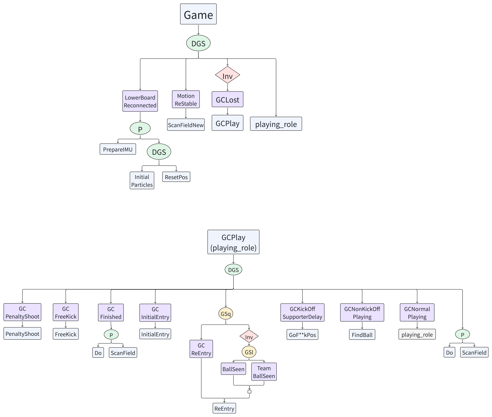
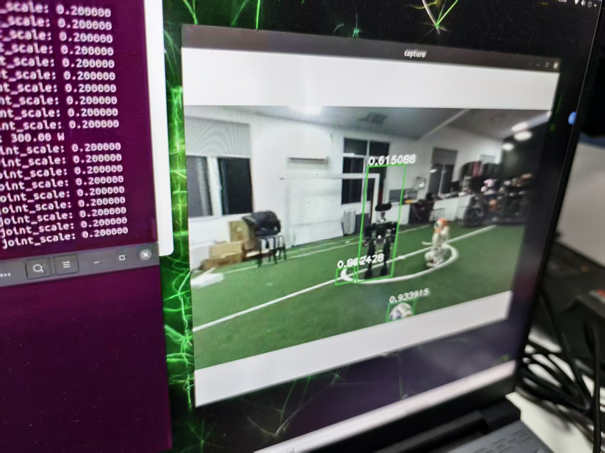
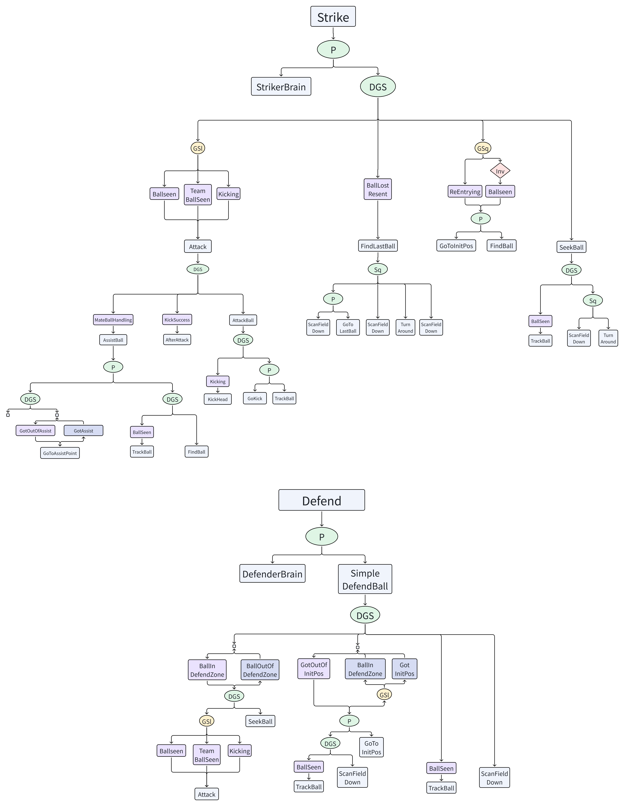
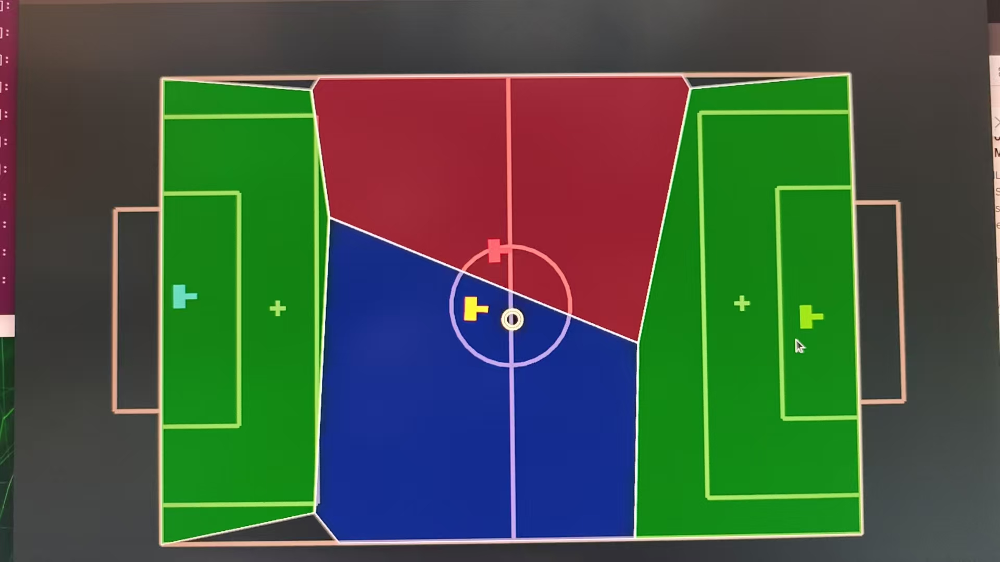
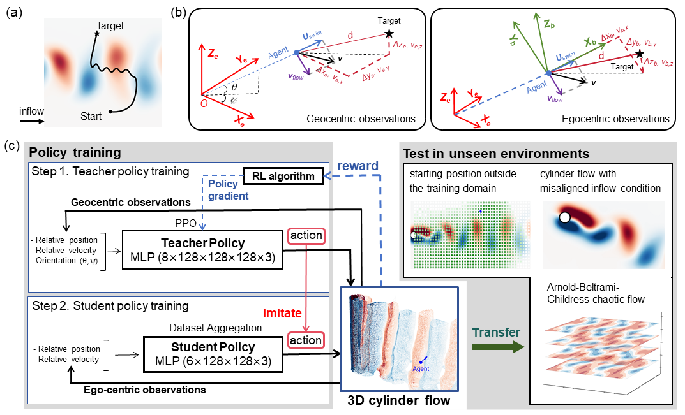
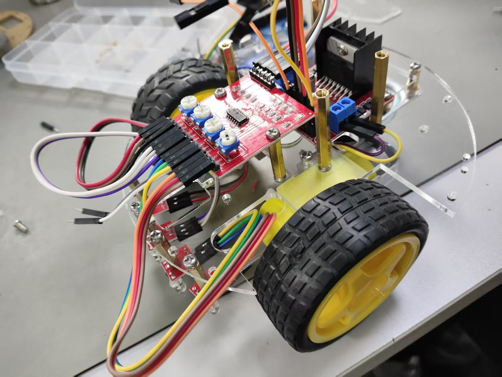
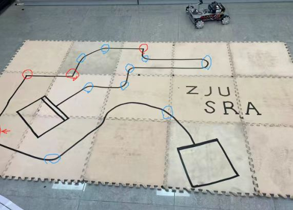
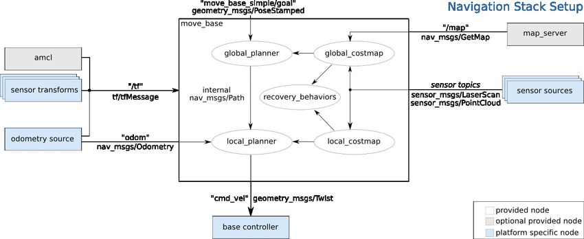
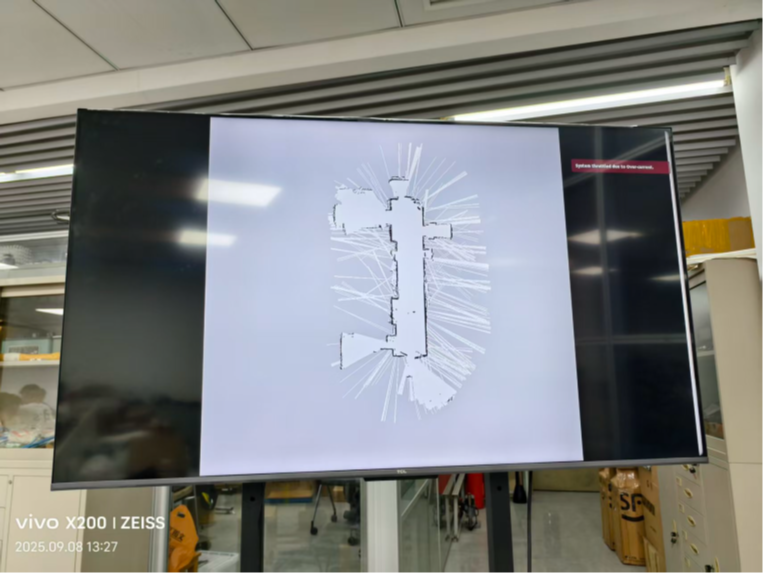

About Me
I am Chen Fang (方辰 in Chinese), a third-year undergraduate student majoring in Robotics Engineering at the College of Control Science and Engineering, Zhejiang University (ZJU). GPA: 4.66/5.0 (91.60/100), ranking 3rd out of 45 students in my major. My career aspiration is to become a versatile Robotics Researcher and Engineer.
On the engineering front, I am a core member of ZJUDancer, where I contribute to the design and maintenance of complex multi-robot systems (integrating vision, control, and strategy) for the RoboCup Humanoid League. In parallel, I serve as a Motion Control Algorithm Intern at High Torque. My team and I are currently geared up for an intensive competition season, aiming for top honors at the German Open (March), the China Robot Competition (May), and the RoboCup World Cup in Incheon, Korea (July).
My academic interests lie at the intersection of Legged Locomotion and Whole Body Control (WBC). I am particularly fascinated by leveraging Reinforcement Learning (RL) to solve complex motion challenges in humanoid robots. To date, I have gained extensive experience in training and deploying advanced frameworks such as Legged Gym, HimLoco, AMP, and Beyond Mimic. I am honored to be advised by Dr. Shengze Cai and Dr. Shangke Lyu in my research journey.
Research Areas: Reinforcement Learning for
Locomotion, Control Theory, Humanoid Robotics.
Platforms ( I get involved in development or familiar with
):
ZJUSRA Anycar, 'Pterosaur 风神翼龙 in Chinese' UAV, High Torque Pi
Plus, Wheeltec R3 Tracked Vehicle.
Skills:
ROS1, Git, SolidWorks, C++, Python.
Research & Projects
ZJUDancer Full-Stack Humanoid Soccer Robot System
A full autonomous soccer pipeline integrating Motion control, Vision perception, and Behavior coordination for RoboCup humanoid robots.
Motion
- Locomotion trained via AMP framework
- Kick/save actions trained via BeyondMimic
- Planner communicates with low-level controllers via cmd_vel and joy_msg to control speed and trigger actions
Vision
- YOLOv8 detection for field features, ball, goalposts, and robots
- Projection and point-cloud processing for relative position estimation
- Head tracking to keep ball centered in field of view
Behavior

- Scalable single-robot decision system based on Behavior Trees
- Multi-robot Voronoi partitioning with dynamic ball-ownership switching
- Hierarchical skill composition for complex behaviors




Future Directions
We are closely following recent advances in end-to-end learning for humanoid soccer, particularly end-to-end kicking and goalkeeping approaches. Inspired by pioneering work such as soccer-humanoid.github.io and Learning Vision-Driven Reactive Soccer Skills for Humanoid Robots, we aim to integrate these vision-driven reactive frameworks into our system and showcase the results at the RoboCup World Cup in Incheon, Korea this July.

Navigation in three-dimensional vortical flows with egocentric observations based on imitation learning
Teacher-student reinforcement learning framework for autonomous navigation in 3D flow fields. The teacher policy uses geocentric observations with PPO, while the student policy learns from egocentric observations through imitation learning. Successfully transfers to unseen environments including cylinder flow and Arnold-Beltrami-Childress chaotic flow.
经历与荣誉
教学经历
负责浙江大学学生机器人协会的内训和精品课建设。从零开始基于AnyCar巡线小车构建完整课程体系，覆盖电路、通信、机械等入门知识。将所有教学材料（slides和demo code）在GitHub开源。


使用Jetson Nano作为上位机、STM32作为下位机，帮助同学完成运动控制、建图、定位（AMCL）、路径规划（RRT*）和导航任务。在此过程中，帮助学生熟悉Git、ROS、Linux等工具。


获奖情况
- 浙江省政府奖学金 （2024-2025学年）
- 华为菁英奖学金 （2024-2025学年）
- 二等奖学金 （2023-2024、2024-2025学年）
- 全国大学生物联网竞赛华东赛区一等奖